Практичні курси · журнал «ДентАрт» 2023 №1
Закриття крестальної перфорації текучим композитом
Crestal perforation closure with flowable composite
Вступ
Перфорація — це штучне сполучення, що виникає між періодонтом і системою кореневого каналу. Перфорації бувають двох видів: патологічні — ті, що виникли внаслідок карієсу чи резорбтивних дефектів, і ятрогенні — ті, що виникають унаслідок дій лікаря під час лікування кореневих каналів або в разі спроби післяендодонтичного відновлення. Перфорації, що виникають під час лікування кореневих каналів, становлять від 2 до 12 % усіх випадків ендодонтичних невдач.1-5 Бактеріальна інфекція може поширюватись із кореневого каналу або з тканин пародонта, що перешкоджає загоєнню і викликає запалення навколишніх тканин. Через це можуть формуватися нориці, нагноєння, абсцеси й резорбція кістки.
Перирадикулярні тканини, що прилягають до ендодонтичних перфорацій, містять велику різноманітність імунокомпетентних клітин, які відіграють важливу роль у патогенезі запалення та механізмах відновлення. Статистично дно пульпової камери — це саме та частина зуба, де виникає більшість перфорацій.6,7
Варто зазначити, що в клініці вірогідність перфорації зростає пропорційно до складності клінічного випадку: наявність попереднього ендодонтичного лікування, сходинок, зламаних інструментів, кальцифікованих каналів, незвичної анатомії системи кореневих каналів — усі ці фактори збільшують імовірність ятрогенної перфорації.8 Згідно з даними літератури,9 53 % ятрогенних перфорацій утворюються під час препарування простору кореневого каналу для штифтової конструкції, 47 % — під час звичайного ендодонтичного лікування.
Наявність каменів у пульпі, кальцифікація, неправильне розташування зуба (неправильний нахил у дузі або ротація), обширний карієс, внутрішня резорбція кореня, неправильна ідентифікація кореневого каналу, екстракоронкова реставрація або внутрішньоканальні штифти, утруднений доступ для лікування — типові чинники, що призводять до перфорації кореня.
Успішність10 лікування кореневих каналів з перфораціями залежить від того, чи можна виправити перфорацію так, щоб вдалося запобігти проникненню бактеріальної інфекції або усунути бактеріальну інфекцію в місці перфорації. Низка факторів, включно з часом від утворення перфорації до її виявлення й лікування (а якщо конкретніше — інфікованості перфорації), розміром і розташуванням перфорації, впливають на можливість подолання інфекції.
З огляду на фактори, що впливають на результат лікування, Fuss і Trope класифікували перфорації так:11
- «Свіжі» перфорації. Такі, що утворилися під час ендодонтичного лікування, характеризуються неінфікованою порожниною, активною кровотечею. У разі негайного адекватного лікування мають сприятливий прогноз.
- «Старі» перфорації. Ще їх можна називати інфікованими — могли бути утворені як кілька годин, так і кілька років тому. Через інфікованість мають гірший прогноз.
- Дрібні перфорації. Такі, що менші, ніж розмір верхівки файла 20-40 (залежно від цитованих авторів). Добре піддаються лікуванню.
- Великі перфорації. Усі, більші за дрібні. Найчастіше утворюються під час післяендодонтичного відновлення, агресивного пошуку усть кореневих каналів, рідше — у результаті агресивного проходження кальцифікованих кореневих каналів.
- Корональні, або супракрестальні. Перфорації, що виникли корональніше від епітеліального з'єднання. Лікуються легко.
- Крестальні перфорації. Такі, що виникли на місці епітеліального з'єднання, у межах ясенної борозни, з безпосереднім контактом із тканинами пародонта. Швидко інфікуються, складно загоюються. Прогноз поганий.
- Апікальні перфорації. Такі, що виникли апікальніше від рівня епітеліального з'єднання, мають хороший прогноз у разі своєчасного адекватного лікування.
| Прогноз | Розмір | Локалізація | Час відновлення |
|---|---|---|---|
| Сприятливий | Маленькі | Апікальні або супракрестальні | Негайне закриття |
| Несприятливий | Великі | Еквікрестальні | Відтерміноване закриття |
Наявна класифікація перфорацій відповідно до прогнозу:12
- Клас I: перфорація, розташована в коронковій третині кореня та в межах 3 мм від альвеолярного гребеня, з хорошою залишковою структурою зуба та гарним доступом для закриття перфорації. Прогноз сприятливий.
- Клас II: перфорація, розташована в межах 3 мм від альвеолярного гребеня, з неповним ферулом або обмеженим доступом для закриття перфорації. Прогноз сприятливий, хоча й не ідеальний.
- Клас III: перфорація, розташована більш ніж на 3 мм від альвеолярного гребеня або безпосередньо в межах альвеолярного гребеня, кількість і якість твердих тканин зуба низька або ж немає доступу для закриття перфорації. Прогноз несприятливий.
Матеріали для закриття перфорацій
Характеристики гарних матеріалів13 для закриття перфорації є такими ж, як і для всіх матеріалів, котрі використовуються для пломбування кореневих каналів. Ідеальний матеріал для закриття перфорацій повинен забезпечувати герметичність у системі кореневих каналів, бути нетоксичним і добре сприйматися навколишніми тканинами. Він має бути стабільним за розмірами і не піддаватися впливу вологи, має бути стійким до корозії і простим у використанні мануально. Крім цього, бажано, щоб матеріал міг індукувати остеогенез, цементогенез і був порівняно недорогим. Він також має бути повністю деградований під час процесу відновлення, щоб забезпечити його заміну новою, здоровою кісткою та діяти як бар'єр, проти якого можна розмістити обтураційний матеріал кореневого каналу.14
Для закриття перфорацій використовували амальгаму, цинкоксидевгенолові цементи, гідроксид кальцію, гутаперчу, класичні та модифіковані склоіономери, IRM, Cavit і, зрештою, композитні матеріали (текучі й класичні композити), SuperEBA-цементи, навіть алогенний кістковий матеріал і мезенхімальні клітини, дентинну стружку й трикальцію фосфати (зокрема МТА).15
Дуже популярним для закриття перфорацій є використання мінералтриоксидагрегату (МТА). На його користь свідчать велика кількість досліджень, доступність матеріалу на ринку, біосумісність. Дослідження засвідчили появу незапаленого шару тканини та відкладення цементу (фібробластів і т. ін.) поверх матеріалу в разі використання МТА на неконтамінованій (свіжій або очищеній) перфорації. МТА активно сприяє утворенню твердих тканин, до того ж не є інертним чи подразнювальним, як інші матеріали.16-18 На жаль, матеріал має певні проблеми із застиганням, погано герметизує середні й великі перфорації та не завжди залишається твердим з плином часу.19,20 Слід також зауважити, що для всіх різновидів МТА характерною властивістю є схильність до мікропідтікань.21
Оскільки будь-який матеріал для закриття перфорацій матиме довготривалий контакт з тканинами пародонта,22 зокрема зі зв'язковим апаратом зуба (періодонтом), а до того ж відомо, що прогноз зуба буде значно погіршуватись у разі втрати епітеліального прикріплення,23 потрібно окремо оцінювати біосумісність матеріалу.
У лабораторному дослідженні, де порівнювали склоіономерний матеріал (Fuji II, GC), текучий композит (Spectrum, Dentsply) і амальгаму, виявили, що амальгама найбільш цитотоксична, склоіономер під час затвердіння виділяє різні субстанції доволі тривалий час, а світлотвердний композит небезпечний упродовж усього процесу достатнього затвердіння. Хоча насправді клінічні докази токсичних ефектів цих матеріалів трапляються нечасто, а організм здорової людини зазвичай легко може подолати їхню подразнювальну дію, стоматологи все одно повинні мати на увазі ймовірність ризику.
Виявилося,24 що тип матеріалу значно впливає на розподіл навантажень у межах зуба. Найбільш важливою фізичною характеристикою є модуль еластичності матеріалу у порівнянні з модулем еластичності зуба: що ближчі показники, то більш гомогенно розподіляється навантаження. Найбільш наближений до дентину модуль еластичності здебільшого мають саме текучі композити.25 Загалом заповнення кореневих каналів «дентиноподібним» за еластичністю матеріалом значно зменшує ризики появи тріщин, переломів, відколів — завдяки формуванню біомеханічного моноблоку.26,27
Варто зазначити, що матеріали на основі композитних смол (світлотвердні композити) вимагають дуже ретельного контролю вологи. Запасним варіантом залишається склоіономерний цемент, модифікований смолою. Незважаючи на те, що цей матеріал також чутливий до вологи, його експлуатаційні властивості, час схоплювання та самоадгезивний характер дають змогу закривати перфорації у складних умовах. Якщо є кісткова порожнина, її слід ретельно очистити, а всі уламки видалити перед закриттям.28
Дослідження, де порівнювали склоіономерний цемент, текучий композит і композит хімічного затвердіння, виявили, що найменше підтікань у текучого композиту — попри хімічну адгезію склоіономеру до дентину.29 З погляду авторів Alhadainy і Himel, причиною таких результатів є досконаліша адаптація текучого композиту до стінок перфорації.29 Імовірно, світлове затвердіння забезпечувало кращий контроль герметичності, оскільки матеріал тверднув швидко, і це зменшувало загрозу того, що волога перешкоджатиме правильній полімеризації.
Техніка закриття перфорацій
Як свідчать історичні дані, перфорації кореневих каналів закривалися переважно хірургічно — у спосіб відшарування ясенного клаптя, механічного очищення поверхні перфорації і закриття відповідним матеріалом (історично — амальгамою). На сьогодні більш поширений консервативний спосіб лікування. Утім, поява нових матеріалів та приладів оптичного збільшення зуба сприяла розробці альтернативних інноваційних методів лікування.30
Підготувати місце перфорації можна за допомогою п'єзоелектричного ультразвукового наконечника або невеликого круглого бора, але часто достатньо простої механічної обробки ручними кюретками. Гемостаз повинен бути досягнутий до того, як реставраційний матеріал буде розміщено в перфораційному дефекті. Матеріал, що відповідає зазначеним вимогам, слід ретельно утрамбувати в порожнину для забезпечення щільного заповнення. Якщо гемостазу досягти не вдається, лікар повинен ухвалити рішення щодо подальших дій.
Найчастіше гемостазу сприяє застосування тиску (механічне стиснення мікросудин), або ретельна іригація фізрозчином (що зменшує геморагію в зоні дефекту), або використання гідроксиду кальцію. Останній завдяки власній лужності викликає коагуляційний некроз протягом 3-5 хвилин і, за даними літератури, може забезпечувати гемостаз. Але ці способи неефективні в разі дефектів середнього й великого розмірів.31
Основна проблема, яка виникає під час пломбування перфорації середнього й великого розмірів будь-яким матеріалом, полягає в загрозі екструзії пломбувального матеріалу в періодонт і кістку, що може спричинити запальні реакції та уповільнене загоєння. Щоб запобігти цьому, Lemon 1992 року32 запропонував концепцію внутрішньої матриці для закриття перфорації. Така матриця складається переважно з колагену, гідроксиапатиту або сульфату кальцію. Усі ці матеріали біосумісні й розсмоктуються впродовж кількох днів. Внутрішня матриця розрізається на дрібні шматочки й ущільнюється в ділянці перфорації, після чого герметизувальний матеріал накладається на внутрішню матрицю, доки перфорація не буде запечатана. Ця внутрішня матриця реконструює зовнішню форму кореня, полегшує адаптацію матеріалу для закриття перфорації та запобігає вростанню епітеліальної тканини, що дає змогу формувати нормальну періодонтальну зв'язку.
Клінічний випадок 1
Реферативна пацієнтка звернулася в клініку 2018 року через потребу переліковування кореневих каналів. За аналогічної клінічної картини зазвичай рекомендується видалення зуба, однак з огляду на побажання пацієнтки і той факт, що вона подолала відстань 700 км, щоб потрапити на прийом, зважаючи на ризики, було ухвалено рішення про спробу ревізії.
На фото 1 видно рентгенологічні ознаки запалення (апікальний періодонтит) і фрагменти гутаперчі, введені в перфорацію дна пульпової камери. Крестальні перфорації небезпідставно вважаються такими, що мають найгірший прогноз і частіше призводять до невдачі. Основні проблеми в закритті крестальних перфорацій — брак герметичності (що критично в зоні з високим ризиком інфікування мікроорганізмами, якими є пародонтальна кишеня або зубоясенна борозна) і висока вірогідність екструзії матеріалу в періодонт.33
Після ізоляції було зроблене розпломбування кореневих каналів (фото 2, 3). Гутаперчу з фуркаційної перфорації було забрано за допомогою ультразвуку (фото 4).
Через брак часу та наявність двох великих перфорацій з активною кровотечею після використання апікальної матриці було вирішено закрити перфорації текучим композитом — з модулем еластичності, наближеним до еластичності зуба, за повним адгезивним протоколом (фото 7-12). Після чого було проведено препарування кореневих каналів, зроблено іригацію, пломбування методом вертикальної конденсації гутаперчі. Приблизно тиждень після лікування пацієнтка вживала нестероїдні протизапальні препарати для знеболення, оскільки зуб все ще болів, що є нормою для такого закриття перфорацій.
Клінічний випадок 2
Реферативний пацієнт звернувся в клініку зі скаргами на біль у ділянці зуба 25, при собі мав результат комп'ютерної томографії (фото 16, 17). На діагностичних знімках чітко визначається крестальна перфорація, що виникла внаслідок пошуку кореневого каналу.
Було ухвалено рішення про ортоградну ревізію із закриттям перфорації композитним матеріалом. Як матрицю було використано колагенову губку Roeko Gelatamp, матеріалами для закриття перфорації обрано Optibond FL (Kerr) і текучий композит SDR (Dentsply) (фото 18, 19). Контроль через 2 роки (фото 20): бачимо загоєння періапікального процесу, успішне закриття перфорації, зуб у функції з прямою реставрацією.
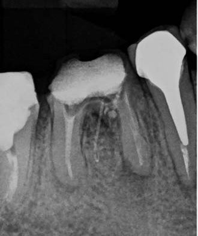
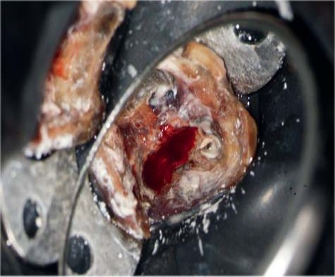
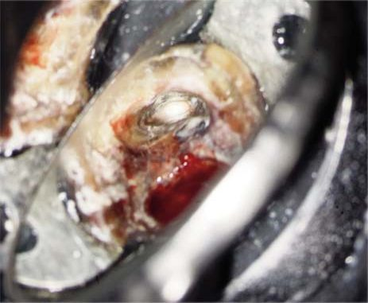
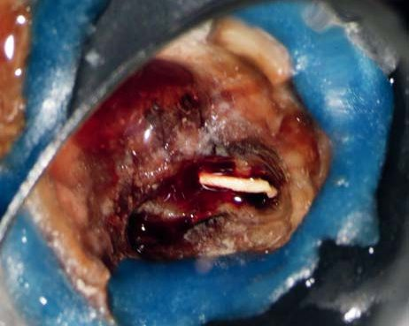
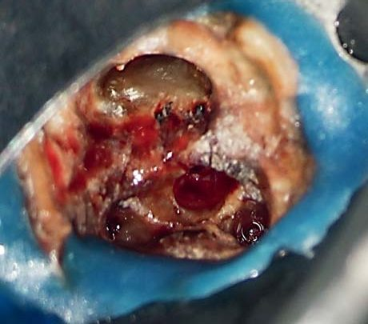
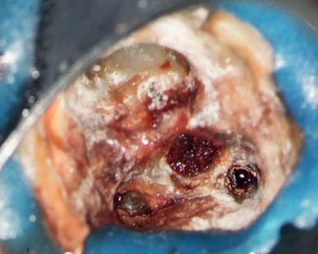
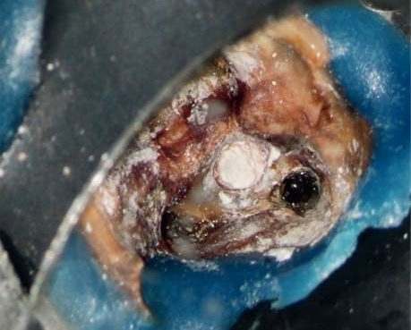
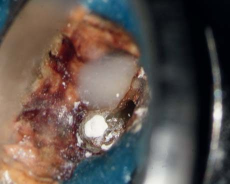
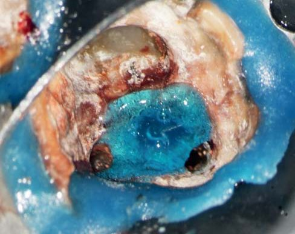
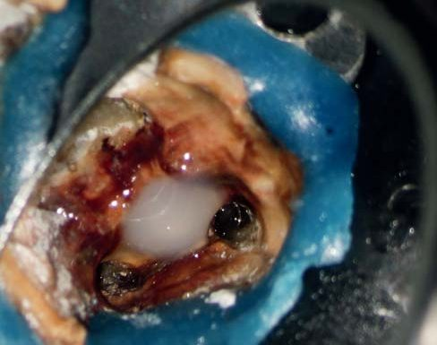
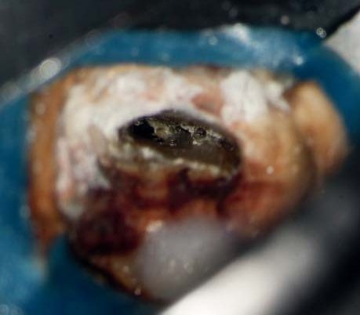
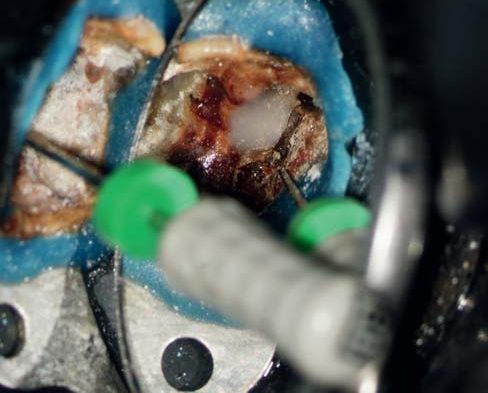
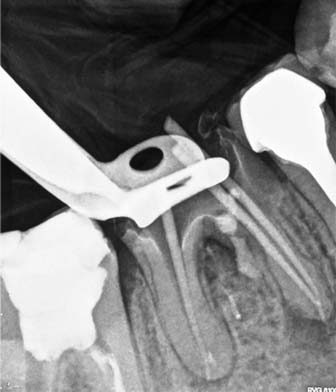
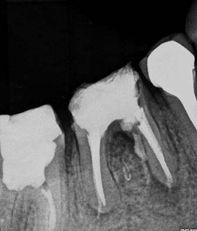
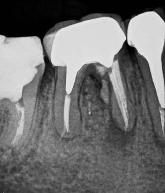
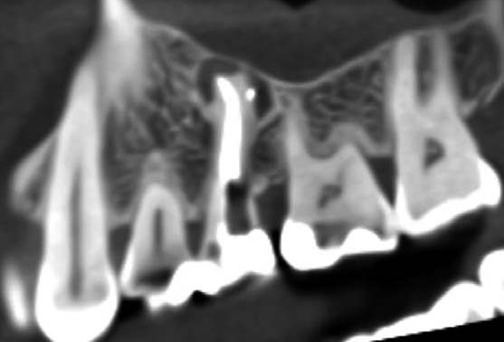
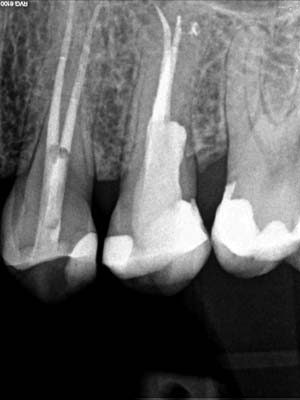
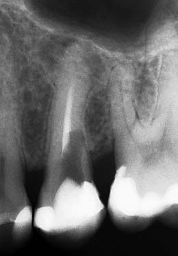
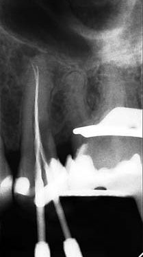
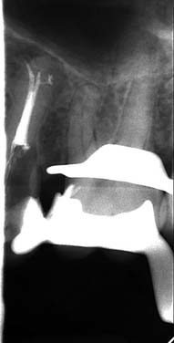
Фото 1. Діагностичний знімок до втручання. Фото 2. Кровотеча з крестальної перфорації при спробі очищення. Фото 3. Дистальний канал з резорцин-формаліновою пастою, друга перфорація на мезіальній стінці дистального кореневого каналу. Фото 4. Гутаперча з крестальної перфорації. Фото 5. Вигляд порожнини після очищення. Виявлено 2 перфорації. Фото 6. Внесення колагенової губки Gelatamp як внутрішньої матриці для закриття перфорації. Зверніть увагу: на поверхні колагену є волога від ексудації, яка б перешкоджала застиганню матеріалу. Фото 7, 8. Як додаткову матрицю, внесено DentoGen (гемігідрат сульфату кальцію) для тимчасової обтурації перфорації. Фото 9, 10. Протравлювання стінок перфорації (завдяки матриці є можливість спокійно протравити поверхню — без ризику отримати кровотечу й контамінацію протравленої поверхні кров'ю), бондинг і внесення текучого композиту (Spectrum, Dentsply). Фото 11, 12. Проходження кореневих каналів поруч із реставрованою перфорацією. Фото 13. Знімок з гутаперчевими штифтами для контролю. Фото 14. Контрольний знімок після пломбування кореневих каналів. У фуркації — деноджен і текучий композит. Фото 15. Контроль через 6 місяців. Фото 16. Зріз комп'ютерної томографії: ознаки апікального періодонтиту. Фото 17. Діагностичний періапікальний знімок. Видно невдалу спробу пошуку кореневого каналу і крестальну перфорацію. Фото 18. Проходження кореневих каналів, рентгенологічне підтвердження робочої довжини. Фото 19. Контроль пломбування основної системи кореневих каналів. Фото 20. Контроль через 2 роки. Періапікальний знімок з успішно закритою перфорацією, бачимо також загоєння періапікального процесу.
Висновки
Хоча показник успішності ендодонтичного лікування становить понад 95 %, можуть виникнути ятрогенні ускладнення, такі як випадкова перфорація кореня або дна пульпової камери, переважно у разі повторного лікування кореневого каналу та коли виникає потреба видалити інтрадикулярні штифти. Якщо ятрогенні перфорації не лікувати належно, може виникнути запалення періодонта, що зрештою призведе до втрати зуба.34-36 Результатом є хронічна запальна реакція пародонта (характеризується утворенням грануляційної тканини), яка може призвести до незворотної втрати прикріплення або навіть до втрати зуба.36
Закриття перфорації має бути проведене з урахуванням названих вище факторів. Отже, клініцист повинен мати досконалі знання про анатомію зуба, щоб запобігти загрозі перфорації. У всіх випадках перфорації важливим для успішного лікування є контроль процесу контамінації.31,37
Загалом, спираючись на дані наукової літератури та власний клінічний досвід, автори статті мають достатні підстави впевнено стверджувати, що крестальні перфорації можуть бути ефективно відновлені за допомогою сучасних композитних матеріалів — якщо буде дотримано вимог протоколу.
Література
- Ingle J. L. A standardized endodontic technique utilizing newly designed instruments and filling materials. Oral Surg Oral Med Oral Pathol. 1961; 14: 83–91.
- Seltzer S., Bender I. B., Smith J., et al. Endodontic failures — an analysis based on clinical, roentgenographic, and histologic findings. Oral Surg Oral Med Oral Pathol. 1967; 23: 500–530.
- Kerekes K., Tronstad L. Long-term results of endodontic treatment performed with a standardized technique. J Endod. 1979; 5: 83–90.
- Sinai I. H., Romea D. J., Glassman G., et al. An evaluation of tricalcium phosphate as a treatment for endodontic perforations. J Endod. 1989; 15: 399–403.
- Farzaneh M., Abitbol S., Friedman S. Treatment outcome in endodontics: the Toronto study. Phases I and II: Orthograde retreatment. J Endod. 2004; 30: 627–633.
- Tsesis I., Fuss Z. Diagnosis and treatment of accidental root perforations. Endod Topics. 2006; 13: 95–107.
- Silva M. J., Caliari M. V., Sobrinho A. P., et al. An in vivo experimental model to evaluate furcation lesions resulting from perforation. Int Endod J. 2009; 42: 922–929.
- Estrela C., Decurcio D. A., Rossi-Fedele G., et al. Root perforations: a review of diagnosis, prognosis and materials. Braz Oral Res. 2018; 32(suppl 1): e73.
- Kvinnsland I., Oswald R. J., Halse A., Grønningsaeter A. G. A clinical and roentgenological study of 55 cases of root perforation. Int Endod J. 1989; 22: 75–84.
- Beavers R. A., Bergenholtz G., Cox C. F. Periodontal wound healing following intentional root perforations in permanent teeth of Macaca mulatta. Int Endod J. 1986; 19: 36–44.
- Fuss Z., Trope M. Root perforations: classification and treatment choices based on prognostic factors. Endod Dent Traumatol. 1996; 12(6): 255–264.
- Tsesis I., Faivishevsky V., Kfir A., Rosen E. Outcome of surgical and nonsurgical treatment of root perforations: a clinical study of 364 cases. J Endod. 2006; 32(5): 478–482.
- Gartner A. H., Dorn S. O. Advances in endodontic surgery. Dent Clin North Am. 1992; 36: 357–379.
- Dazey S., Senia E. S. An in vitro comparison of the sealing ability of materials placed in lateral root perforations. J Endod. 1990; 16: 19–23.
- Tsesis I., Rosen E., Tamse A. Repair of perforation accidents in endodontics: a review. Quintessence Int. 2010; 41(5): 373–386.
- Pitt Ford T. R., Torabinejad M., McKendry D. J., et al. Use of mineral trioxide aggregate for repair of furcal perforations. Oral Surg Oral Med Oral Pathol Oral Radiol Endod. 1995; 79: 756–763.
- Holland R., Otoboni Filho J. A., De Souza V., et al. Mineral trioxide aggregate repair of lateral root perforations. J Endod. 2001; 27: 281–284.
- Torabinejad M., Pitt Ford T. R., McKendry D. J., et al. Histologic assessment of mineral trioxide aggregate as a root-end filling in monkeys. J Endod. 1997; 23: 225–228.
- Menezes R., da Silva Neto U. X., Carneiro E., et al. MTA repair of a supracrestal perforation: a case report. J Endod. 2005; 31: 212–214.
- Hsien H. C., Cheng Y. A., Lee Y. L., et al. Repair of perforating internal resorption with mineral trioxide aggregate: a case report. J Endod. 2003; 29: 538–539.
- De-Deus G., Reis C., Brandão C., et al. The ability of Portland cement, MTA, and MTA Bio to prevent through-and-through fluid movement in repaired furcal perforations. J Endod. 2007; 33(11): 1374–1377.
- Tai K. W., Chang Y. C. Cytotoxicity evaluation of perforation repair materials on human periodontal ligament cells in vitro. J Endod. 2000; 26(7): 397–400.
- Lantz B., Persson P. A. Periodontal tissue reactions after root perforations in dog's teeth. A histologic study. Odontol Revy. 1967; 75(3): 209–237.
- Aslan T., Esim E., Üstün Y., Dönmez Özkan H. Evaluation of stress distributions in mandibular molar teeth with different iatrogenic root perforations repaired with Biodentine or MTA: A finite element analysis study. J Endod. 2021; 47(4): 631–640.
- Benetti A. R., Peutzfeldt A., Lussi A., Flury S. Resin composites: modulus of elasticity and marginal quality. J Dent. 2014; 42(9): 1185–1192.
- Lawley G. R., Schindler W. G., Walker W. A., et al. Evaluation of ultrasonically placed MTA and fracture resistance with intracanal composite resin in a model of apexification. J Endod. 2004; 30(3): 167–172.
- Wilkinson K. L., Beeson T. J., Kirkpatrick T. C. Fracture resistance of simulated immature teeth filled with Resilon, gutta-percha, or composite. J Endod. 2007; 33(4): 480–483.
- Saed S. M., Ashley M. P., Darcey J. Root perforations: aetiology, management strategies and outcomes. The hole truth. Br Dent J. 2016; 220(4): 171–180.
- Alhadainy H. A., Himel V. T. Comparative study of the sealing ability of light-cured versus chemically cured materials placed into furcation perforations. J Endod. 1993; 19(7): 338–342.
- Roda R. S. Root perforation repair: surgical and nonsurgical management. Pract Proced Aesthet Dent. 2001; 13(6): 467–472.
- Senthilkumar V., Subbarao C. Management of root perforation: a review. J Adv Pharm Educ Res. 2017; 7(2): 54–57.
- Lemon R. R. Nonsurgical repair of perforation defects. Internal matrix concept. Dent Clin North Am. 1992; 36(2): 439–457.
- Petersson K., Hasselgren G., Tronstad L. Endodontic treatment of experimental root perforations in dog teeth. Endod Dent Traumatol. 1985; 1: 22–28.
- Silveira C. M., Sanchez-Ayala A., Lagravere M. O., et al. Repair of furcal perforation with mineral trioxide aggregate: long-term follow-up of 2 cases. J Can Dent Assoc. 2008; 74(8): 729–733.
- Riccitiello F., Di Caprio M. P., D'Amora M., et al. Repair of a root perforation by using MTA: a case report. Recenti Prog Med. 2013; 104(7-8): 453–458.
- Parirokh M., Torabinejad M. Mineral trioxide aggregate: a comprehensive literature review. Part I: chemical, physical, and antibacterial properties. J Endod. 2010; 36(1): 16–27.
- Adiga S., Ataíde I., Fernandes M., Adiga S. Nonsurgical approach for strip perforation repair using mineral trioxide aggregate. J Conserv Dent. 2010; 13: 97–101.